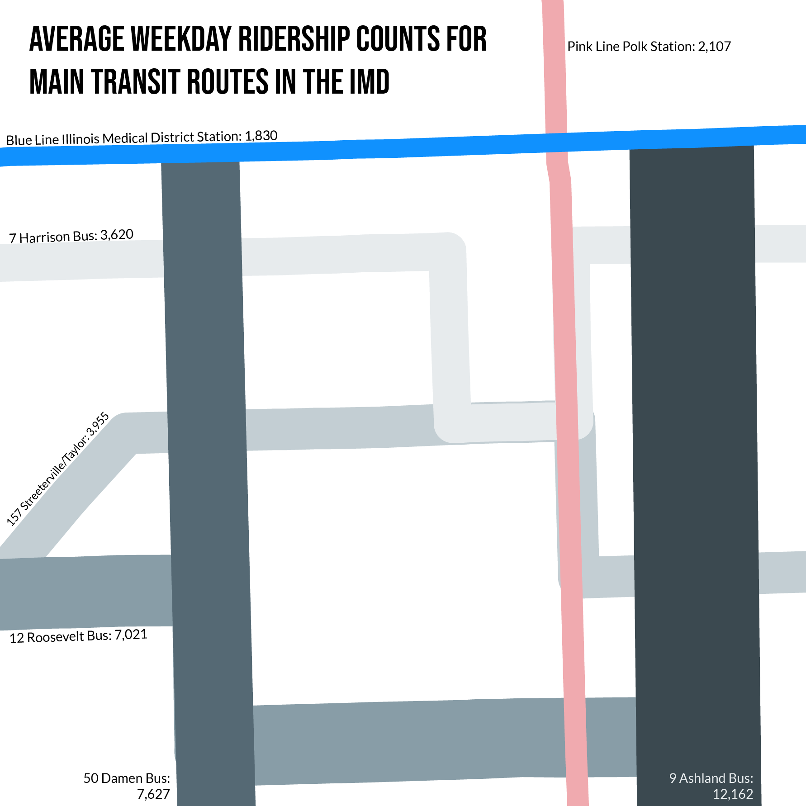
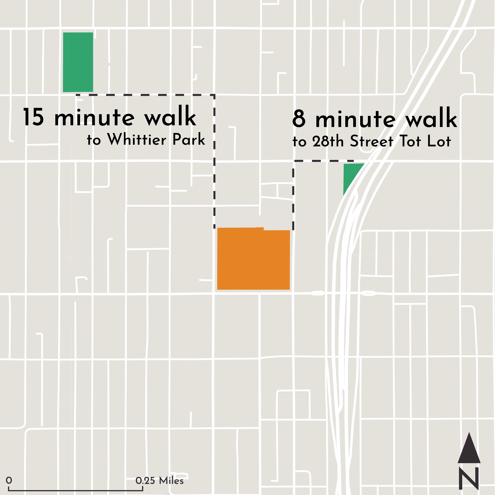

Map Design
I created most of these maps in ArcGIS Pro and processed them in Illustrator for projects throughout my master’s of urban planning and policy program.
Illinois Medical District
In spring 2023, I was part of a studio course to devise a plan for the Illinois Medical District (IMD). I produced both of the following maps as part of our existing conditions research on the district.
Land Use in the IMD

This land use map demonstrates the paucity of green space in the district and the significant share of land dedicated to parking.
Transit Routes in the IMD

This map is a creative approach to communicate both what transit routes exist in the district and the popularity of these routes. The thickness of the lines for the routes is proportionate to the routes’ ridership counts.
New Nicollet
I created these maps for a group submission to the 2024 American Planning Association National Student Planning and Design Competition. My group placed as a top three finalist, and we will compete in a final round involving a presentation at the National Planning Conference in April 2024.
These maps were critical to our existing conditions report and identification of challenges to overcome and strengths to leverage.
Park Access

Despite high levels of park access across Minneapolis, there are few parks accessible by walking or rolling from the site. Those that are accessible are small in size.
Bluespots

Identifying bluespots, or areas where water is most likely to pool in heavy rain events, informed our site plan layout. We sited more permeable surfaces in these existing bluespots.
Transit Around the Site

Access to numerous transit routes, including one existing and one future bus rapid transit line, is a major strength of area.
Armitage Avenue Corridor
These maps were produced from an informal study of the Armitage Avenue corridor in Logan Square during fall 2023 for a course on spatial planning. Some maps rely on underlying quantitative data, and some draw from my own experiences observing and participating in corridor activities.
Activity Map

Unlike other maps on this page, this map originated in SketchUp and was processed in Illustrator. Activities were identified through participant observation along the corridor.
Traffic Flows

The corridor sees lower average annual daily vehicle users than nearby corridors.
Land Use Along the Corridor

This map is a playful take on a land use map and was created by roughly tracing over a feature class of land uses along the corridor.